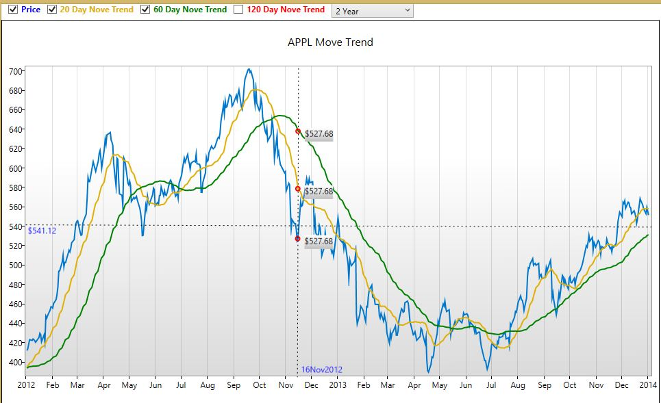

About this chart
Recently, several friends asked me about how to develop a linear chart for real time risk monitoring and historical risk data display. I decided to publish this demo just in case more of my friends need it. This demo uses WPF Toolkit which is an open source WPF extension library from Microsoft. I added DataVisualization source code as a project in this demo for better understanding the internal implementation. However, I did not change it. So if you want, you also can simply refer WPF Toolkit directly
Historical Chart
This demo is a historical linear chart. Later on, I will publish a real time chart and the real time chart performance analysis. Compared with original WPF Toolkit linear chart, I developed an adorner control to implement cursors on the lines, as well as labels beside the cursors. This demo also illustrates how to add crosshairs on the chart. Here is an example:

Adorner Control
An Adorner is a custom FrameworkElement that is bound to a UIElement. Adorners are rendered in an AdornerLayer, which is a rendering surface that is always on top of the adorned element or a collection of adorned elements. Rendering of an adorner is independent from rendering of the UIElement that the adorner is bound to. An adorner is typically positioned relative to the element to which it is bound, using the standard 2-D coordinate origin located at the upper left of the adorned element.
Common applications for adorners include:
- Adding functional handles to a UIElement that enable a user to manipulate the element in some way (resize, rotate, reposition, etc.).
- Provide visual feedback to indicate various states, or in response to various events.
- Overlay visual decorations on a UIElement.
- Visually mask or override part or all of a UIElement.
Above info is from MSDN, for more detail about adorner control, please refer Adorner Overview and How-to Topics
In this demo, I created a customized adorner control to draw the cursor (circle) and label beside the cursor on the lines as following:
<local:adornedcontrol x:name="adornedControl"
horizontalalignment="Center"
verticalalignment="Center"
horizontaladornerplacement="Outside"
verticaladornerplacement="Outside">
<local:adornedcontrol.isadornervisible>
<multibinding converter="{StaticResource VisibilityConverter}">
<binding path="PointVisibility" />
<binding elementname="Price" path="Visibility" />
</multibinding>
</local:adornedcontrol.isadornervisible>
<local:adornedcontrol.adornercontent>
<canvas x:name="adornerCanvas" horizontalalignment="Center" verticalalignment="Center" width="auto" height="20">
<textblock canvas.left="10" canvas.top="5" width="Auto" height="20" text="{Binding ClosePrice, StringFormat={}{0:C}}">
<textblock.background>
<lineargradientbrush startpoint="0,0" endpoint="0,1">
<gradientstop color="White" offset="0"></gradientstop>
<gradientstop color="Silver" offset="1" />
</lineargradientbrush>
</textblock.background>
</textblock>
</canvas>
</local:adornedcontrol.adornercontent>
<ellipse visibility="{Binding PointVisibility}" style="{StaticResource EllipseStyle}" />
</local:adornedcontrol>
To review the implementation of adorner control, please download the source code.